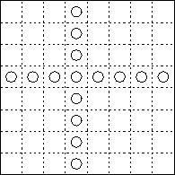

The aim of this exercise is to show how Fortran 90 can be used to program the Game of Life, a simple grid based problem with complex behaviour. It will show how Fortran 90 can be used to produce code in a very neat form and exposes the potential for coding in a data parallel programming style.
The game of life is a simple cellular automata where the world is a 2D grid of cells which have two states: alive or dead. At each iteration the new state of a cell is determined by the state of its neighbours at the previous iteration. This includes both the nearest neighbours and diagonal neighbours.
The rules for the evolution of the system are:
Your code will need to:
The number of neighbours can be calculated using shifts,
target = CSHIFT(source, shift, dimension)
sets target to be the same as source but with its elements shifted a distance shift along dimension of the array dimension. For example,
target = CSHIFT(source, -1, 1)
would set
target(i) = source(i - 1)
CSHIFT automatically performs periodic boundary conditions. Otherwise references would be made to elements outside the bounds of the array.
The following skeleton program (which is available by clicking here) should be used as a starting point.
PROGRAM life
IMPLICIT NONE
! This code performs MAXLOOP iterations of an NxN life board
!
INTEGER, PARAMETER :: N=8, MAXLOOP=10
INTEGER :: loop
CHARACTER(LEN=10) :: picfile
! 1) Declare main arrays
!
! 2) Initialise board
!
! Print starting config to file life00.pgm
!
WRITE(picfile, 20) 0
20 FORMAT('life', i2.2, '.pgm')
OPEN(UNIT=10, FILE=picfile)
WRITE(10, FMT='(''P2'',/,i3,2x,i3,/,i3)') N, N, 1
WRITE(10,*) board
CLOSE(UNIT=10)
! 3) Perform MAXLOOP updates
!
! 4) Count number of neighbours
!
! 5) Calculate new generation
!
! Write out new state of board
!
WRITE(picfile, 20) loop
OPEN(UNIT=10, FILE=picfile)
WRITE(10, FMT='(''P2'',/,i3,2x,i3,/,i3)') N, N, 1
WRITE(10,*) board
CLOSE(UNIT=10)
END DO
END

! Include in the declarations; strings for filenaming
CHARACTER (LEN=2) :: cupdate
CHARACTER (LEN=12) :: filename
!...
! Include in the time loop
! hack to write time into a string
WRITE(cupdate,'(I2.2)') update
filename = 'life'//cupdate//'.pgm'
OPEN(UNIT=10,FILE=filename)
! write the board to a pgm file for viewing
WRITE(10,fmt='(''P2'',/,I3,2X,I3,/,I3)') N, N, 1
! must be a capital P for the MAGIC NUMBER
WRITE(10,*) board
CLOSE(10)
This should, when run, produce life_*.pgm files which can be viewed using xv. Alternativly, these files can be viewed as animation using,
xv -expand 10 -wait 0.1 -wloop -rw *.pgm
target = CSHIFT(CSHIFT(source, 1, 2), -1, 1)
This would shift array source initially in the 2nd dimension and then in the 1st.
Now add distribution directives for the two arrays source and target.